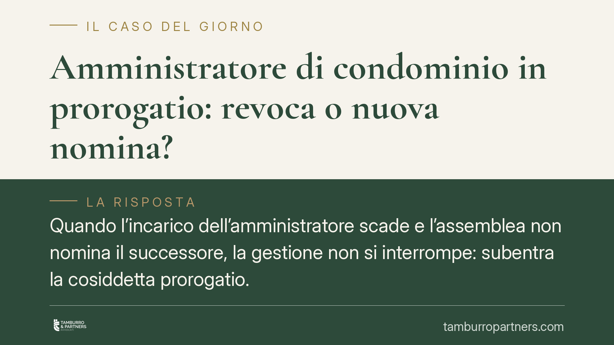

Amministratore di condominio in prorogatio: revoca o nuova nomina?
Quando l'incarico dell'amministratore scade e l'assemblea non nomina il successore, la gestione non si interrompe: subentra la cosiddetta prorogatio. Ma l'amministratore che resta in carica per necessità può essere revocato, o va semplicemente sostituito con una nuova nomina? La distinzione ha effetti concreti su compenso, responsabilità e tempistiche assembleari. Facciamo chiarezza sui principi consolidati.

Il fatto: cosa succede alla scadenza dell'incarico
L'incarico dell'amministratore di condominio ha durata annuale e si intende rinnovato per altro anno (art. 1129, decimo comma, c.c.). Alla scadenza, però, può accadere che l'assemblea non provveda a rinnovare o a nominare un nuovo amministratore.
In questi casi la gestione non resta priva di un referente: si applica il principio della prorogatio, di elaborazione giurisprudenziale, per cui l'amministratore uscente continua a esercitare le proprie funzioni fino alla nomina del successore. È un istituto di continuità, non un rinnovo dell'incarico.
Inquadramento normativo
Il codice civile non disciplina espressamente la prorogatio con una norma dedicata: si tratta di un principio ricavato in via interpretativa dalla necessità di non lasciare il condominio senza gestione. L'art. 1129 c.c., riformato dalla L. 220/2012, regola invece la nomina, la durata e la cessazione dell'incarico.
Alla cessazione, l'amministratore uscente è tenuto alla consegna della documentazione condominiale e al compimento delle attività urgenti per evitare pregiudizi agli interessi comuni. Questi obblighi accompagnano la fase di passaggio di consegne, che nella prorogatio si prolunga fino alla nuova nomina.
La revoca è invece disciplinata dall'art. 1129 c.c. tra i poteri dell'assemblea (revoca assembleare, in qualsiasi momento) e dell'autorità giudiziaria nei casi tipizzati dalla norma, tra cui le gravi irregolarità (revoca giudiziale). Sono due strumenti distinti, che presuppongono un incarico in corso.
Prorogatio, rinnovo tacito e prosecuzione: non sono la stessa cosa
La distinzione è pratica, non solo teorica.
- Rinnovo tacito: l'incarico prosegue automaticamente per un altro anno alla scadenza, con pieni poteri e diritto al compenso pattuito. È l'ipotesi ordinaria prevista dall'art. 1129, decimo comma, c.c.
- Prorogatio: interviene quando il rinnovo non opera (ad esempio perché l'assemblea ha deliberato di non rinnovare, ma non ha nominato il successore). L'amministratore resta in carica in via provvisoria, per garantire la continuità, fino alla nuova nomina.
La differenza incide su durata e stabilità del rapporto: nel rinnovo l'incarico è pieno e a termine; nella prorogatio è temporaneo e cede non appena l'assemblea provvede.
Compenso e revoca: perché la nuova nomina è lo strumento corretto
Sul compenso, l'orientamento prevalente riconosce all'amministratore in prorogatio il diritto a essere remunerato per l'attività effettivamente svolta nella fase di continuità: chi opera nell'interesse del condominio non lo fa a titolo gratuito, salvo diversa previsione.
Sulla revoca, la questione è più delicata. La revoca è lo strumento per interrompere un incarico in corso e stabile. Nella prorogatio, invece, l'incarico è già cessato e prosegue solo per necessità di continuità: per questo, in concreto, l'assemblea non ha bisogno di deliberare una revoca, ma è sufficiente che nomini un nuovo amministratore. Con la nuova nomina, la funzione dell'uscente si estingue automaticamente.
Restano ferme le tutele giudiziali: in presenza di gravi irregolarità, ciascun condòmino può comunque agire ai sensi dell'art. 1129 c.c. anche nei confronti dell'amministratore in prorogatio.
Implicazioni pratiche per il condòmino
Se volete cambiare amministratore alla scadenza, non è necessario impantanarsi in una procedura di revoca formale: la strada più lineare è convocare l'assemblea e nominare il nuovo professionista. La nomina chiude la prorogatio.
Se invece l'amministratore in carica è ancora nel pieno del proprio incarico annuale, per interromperlo prima della scadenza occorre la revoca assembleare (o quella giudiziale nei casi previsti).
La qualificazione corretta della situazione — incarico in corso, rinnovato tacitamente o in prorogatio — determina quindi lo strumento da usare e le maggioranze necessarie.
Cosa fare in concreto
- Verificate la data di nomina e la scadenza dell'incarico dell'amministratore: è il primo dato per capire se siete in rinnovo, prorogatio o incarico ancora attivo.
- Convocate l'assemblea con all'ordine del giorno la nomina del nuovo amministratore: se siete in prorogatio, è questa la via corretta, non la revoca.
- Pretendete il passaggio di consegne: documentazione, situazione di cassa e attività pendenti vanno trasferite senza ritardi.
- Verificate il compenso maturato dall'amministratore uscente per il periodo di prorogatio e regolatelo in sede assembleare.
- Se emergono gravi irregolarità, valutate con un legale l'azione giudiziale prevista dall'art. 1129 c.c., a prescindere dalla prorogatio.
---
Contributo informativo a cura di Tamburro & Partners - Avv. Giuseppe Tamburro. Non costituisce parere legale.
Ogni condominio ha una storia a sé.
Se gestisci un'amministrazione e vuoi un confronto su una specifica questione condominiale, scrivi allo studio. Ti rispondiamo entro un giorno lavorativo.